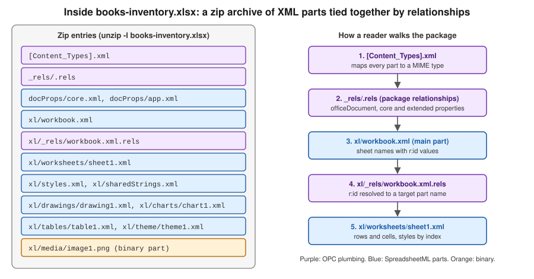
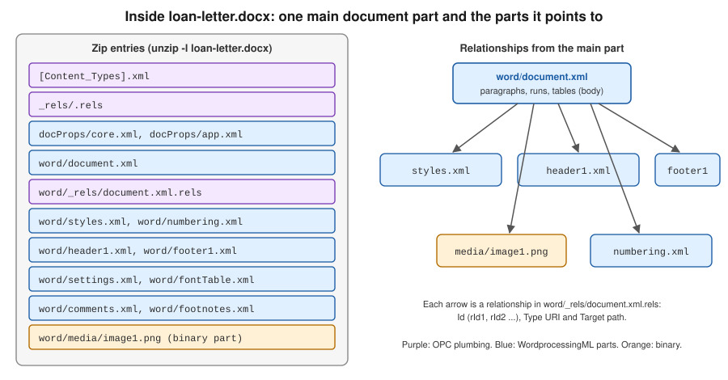

File Formats: OOXML & OLE2
|
This content was generated with the assistance of AI and should be verified against the official documentation before being relied on in production. |
Versions and dates on this page were checked on 2026-10-09: Apache POI 5.5.1 (the 6.0 line has not been released yet and its differences are noted where they matter), Java 21 or later. The examples use the Bookshelf files described on the section landing page.
Every Excel and Word file that a server exports or receives is one of two kinds of container. Files with an x in the
extension (.xlsx, .docx) are zip archives of XML documents, known as OOXML. Files from before Office 2007 (.xls,
.doc) are OLE2 compound files, a small file system stored inside one file. POI has a separate code path for each, and
almost every surprise in real projects (a NotOfficeXmlFileException, an unexpected memory peak, an upload that is
rejected as the wrong type) comes from not knowing which container is in front of you. This page explains both containers,
the POI classes that open them, the MIME types and the limits of each format. The overall component map is on
Introduction & Architecture, and the Maven coordinates are on
Setup & Dependencies.
Two families of formats
| Extension | Container | Content | POI classes |
|---|---|---|---|
|
OOXML zip (OPC) |
Excel workbook, SpreadsheetML |
|
|
OOXML zip (OPC) |
Excel workbook with a VBA project part |
|
|
OOXML zip (OPC) holding binary parts |
Excel binary workbook |
Read only through the event API |
|
OLE2 compound file |
Excel 97-2003 workbook, BIFF8 records |
|
|
OOXML zip (OPC) |
Word document, WordprocessingML |
|
|
OOXML zip (OPC) |
Word template |
|
|
OLE2 compound file |
Word 97-2003 document |
|
The OOXML family is the standard ECMA-376, also published as ISO/IEC 29500. It has two conformance classes, Transitional
and Strict, and POI targets the Transitional files that Excel and Word write by default. The binary .xls and .doc
formats are documented by Microsoft in the Open Specifications (MS-XLS, MS-DOC); POI implements them record by record.
Plain .csv files and the XML-only "SpreadsheetML 2003" files are not handled by POI.
A file’s extension says nothing reliable about its container: a user can rename books-import.xls to .xlsx. POI
therefore detects the container from the first bytes of the file, as shown in
Detecting the container.
OOXML: zip packages made of parts
An OOXML file is a zip archive organised according to the Open Packaging Conventions (OPC, part 2 of ECMA-376). OPC is independent of Word and Excel: it is a general way to store many typed pieces of content and the links between them in one file. Four ideas are enough to read any package.
- Part
-
A named piece of content, such as
/xl/worksheets/sheet1.xmlor/word/media/image1.png. A part name always starts with a slash and maps directly to the zip entry name (without the slash). Parts are mostly XML, but images, fonts and VBA projects are binary. - Content type
-
Every part has a MIME type. The types are not stored in the part but in one special entry,
[Content_Types].xml, asDefaultelements (by file extension, for examplepng) andOverrideelements (by exact part name). The content type is how a reader knows that/xl/workbook.xmlis a workbook and not just XML. - Relationship
-
A typed, directed link from a source part (or from the package itself) to a target part or an external URL. Relationships are stored in a companion part named
_rels/<name>.relsplaced next to the source:/_rels/.relsfor the package and/xl/_rels/workbook.xml.relsfor/xl/workbook.xml. Each one has anId(such asrId1), aTypeURI and aTarget. The XML of the source part refers to targets byIdonly (ther:idattribute), never by file name, so a writer can rename a part without touching the content that uses it. - Package
-
The zip file as a whole: the set of parts, the package-level relationships, and the core properties (title, author, dates, stored in
/docProps/core.xml).
A reader never scans the zip for known names. It reads [Content_Types].xml, follows the package relationship of type
officeDocument to find the main part, and then follows that part’s relationships. This is why files written by Excel,
LibreOffice, Google Sheets and POI can use different names for the same thing and still open everywhere.
The parts of an .xlsx file

| Part | Content |
|---|---|
|
Content types of all parts |
|
Package relationships: the main workbook, core and extended properties |
|
The main part: sheet names, their |
|
Maps each |
|
One part per sheet: rows, cells, formulas, column widths, merged regions, validations |
|
Fonts, fills, borders, number formats and the cell style records that cells refer to by index |
|
The string table: a string cell stores an index into this table |
|
Drawing anchors, charts and pictures |
|
Table definitions and pivot tables |
|
Calculation order that Excel maintains; POI removes it when it changes formulas |
The mapping to the POI object model follows from this table. The cell style indexes in sheet1.xml are the reason a
workbook has a limit on the number of distinct styles (see the limits table below), and the shared string table is why
SXSSFWorkbook can write a very large sheet with little memory: it can write inline strings and keep no table in memory.
The parts of a .docx file

A .docx has a simpler layout: the whole body of the document (paragraphs, runs, tables) is in word/document.xml. Headers,
footers, styles, numbering definitions, comments, footnotes and pictures are separate parts that the main part
reaches through relationships. This is why XWPF methods that add a picture or a header must create a new part and a
relationship, and why copying a paragraph that contains a picture between two documents needs more than copying XML.
Main part content types
The content type of the main part tells the macro-free and macro-enabled variants of a format apart. A server that accepts uploads can read it to know what it received without opening the document model.
| Format | Content type of the main part |
|---|---|
|
|
|
|
|
|
|
|
|
|
|
|
OpenXML4J: OPCPackage and PackagePart
OpenXML4J is the POI implementation of OPC. It lives in the package org.apache.poi.openxml4j.opc of the jar poi-ooxml.
XSSFWorkbook and XWPFDocument are built on it, and you can use it directly to inspect a file without loading the whole
document model, which is useful for validating uploads and for reading properties cheaply.
| Class | Role |
|---|---|
|
The package. |
|
|
|
One part: |
|
A validated part name. |
|
One relationship: |
|
Constants for the standard relationship type URIs, such as |
|
The core properties: |
The first example lists every part of books-inventory.xlsx with its content type and size, then prints the relationships
of the workbook part. It opens the package read-only from a File.
import java.io.File;
import java.io.InputStream;
import java.util.List;
import org.apache.poi.openxml4j.exceptions.InvalidFormatException;
import org.apache.poi.openxml4j.opc.OPCPackage;
import org.apache.poi.openxml4j.opc.PackageAccess;
import org.apache.poi.openxml4j.opc.PackagePart;
import org.apache.poi.openxml4j.opc.PackagePartName;
import org.apache.poi.openxml4j.opc.PackageRelationship;
import org.apache.poi.openxml4j.opc.PackagingURIHelper;
public class ListPackageParts {
public static void main(String[] args) throws Exception {
File file = new File(args.length > 0 ? args[0] : "books-inventory.xlsx");
// READ: nothing is written back when the package is closed
try (OPCPackage pkg = OPCPackage.open(file, PackageAccess.READ)) {
List<PackagePart> parts = pkg.getParts();
for (PackagePart part : parts) {
long size;
try (InputStream in = part.getInputStream()) {
size = in.readAllBytes().length;
}
System.out.printf("%-40s %-85s %7d bytes%n",
part.getPartName().getName(), part.getContentType(), size);
}
PackagePartName workbookName = PackagingURIHelper.createPartName("/xl/workbook.xml");
PackagePart workbook = pkg.getPart(workbookName);
for (PackageRelationship rel : workbook.getRelationships()) {
System.out.printf("%s %s -> %s%n", rel.getId(),
rel.getRelationshipType(), rel.getTargetURI());
}
} catch (InvalidFormatException e) {
throw new IllegalArgumentException("Not a valid OPC package: " + file, e);
}
}
}Source: OpenXML4J (POI component page) and the OPCPackage Javadoc.
Notes on the API that matter in production:
-
OPCPackage.open(File)uses the zip central directory and reads parts on demand, so memory stays low.OPCPackage.open(InputStream)has to read every entry before returning, which makes the whole decompressed file live in memory (or in temporary files if configured). Prefer theFilevariant whenever the upload is already on disk. -
With
PackageAccess.READ_WRITE,close()saves the changes back to the file. To abandon changes, callrevert()instead ofclose(). This is the most common cause of a "corrupted" file after a failed edit. -
XSSFWorkbookandXWPFDocumentaccept anOPCPackage, andgetPackage()returns the package behind an open document. Closing the document closes the package. -
Opening a file that is a zip but not an OPC package throws
InvalidFormatException; opening an OLE2 file throwsNotOfficeXmlFileException. -
Zip bomb limits (
ZipSecureFile) are applied while parts are read. They are covered on the security pages of this section; the defaults are generous for the Bookshelf files and should be lowered for untrusted uploads.
Reading a part and its properties
Reading the main workbook part shows the sheet names without building a Workbook. This is the fastest way to answer
"which sheets does this upload contain?" for a very large file.
import java.io.File;
import java.io.InputStream;
import java.nio.charset.StandardCharsets;
import org.apache.poi.openxml4j.opc.OPCPackage;
import org.apache.poi.openxml4j.opc.PackageAccess;
import org.apache.poi.openxml4j.opc.PackagePart;
import org.apache.poi.openxml4j.opc.PackageProperties;
import org.apache.poi.openxml4j.opc.PackageRelationshipTypes;
public class ReadWorkbookPart {
public static void main(String[] args) throws Exception {
File file = new File("books-inventory.xlsx");
try (OPCPackage pkg = OPCPackage.open(file, PackageAccess.READ)) {
PackageProperties props = pkg.getPackageProperties();
System.out.println("Title: " + props.getTitleProperty().orElse("(none)"));
System.out.println("Creator: " + props.getCreatorProperty().orElse("(none)"));
// follow the package relationship "officeDocument" to the main part
PackagePart main = pkg.getPartsByRelationshipType(
PackageRelationshipTypes.CORE_DOCUMENT).get(0);
System.out.println("Main part: " + main.getPartName() + " " + main.getContentType());
try (InputStream in = main.getInputStream()) {
String xml = new String(in.readAllBytes(), StandardCharsets.UTF_8);
System.out.println(xml.substring(0, Math.min(400, xml.length())));
}
}
}
}Parsing XML by hand like this is only for inspection. To read cell data from a large file use the event API described in
the Excel pages of this section, which is built on the same classes (XSSFReader opens the package and walks these
relationships for you).
OLE2: a file system inside a file
An .xls or .doc file is an OLE2 compound document (also called Compound File Binary, CFB; format defined in MS-CFB). It
is a small file system with its own sectors, a file allocation table, directories and files, all stored in one file. The
file starts with the eight-byte signature D0 CF 11 E0 A1 B1 1A E1. The sector size is 512 bytes in the usual version 3
files, and 4096 bytes in version 4 files. Data smaller than 4096 bytes is stored in a separate "mini stream" made of
64-byte sectors, which is why many tiny streams do not waste space.
In OLE2 terminology a directory is a storage and a file is a stream. The application data lives in well-known streams:
| Stream | Content |
|---|---|
|
The Excel BIFF record stream: every cell, style and formula of an |
|
The main Word binary stream; |
|
Document properties in the HPSF property set format (title, author, word count) |
|
Present in an OLE2 file that wraps an encrypted |
|
Embedded objects and VBA macros |
Note the last two rows of the first group: an encrypted .xlsx is an OLE2 file, not a zip. This is the reason a
password-protected books-import.xlsx fails to open as OOXML and must be opened through POIFS first.
POIFS classes
POIFS ("Poor Obfuscation Implementation File System", a joke on the original name of the OLE2 format) is the POI
implementation of OLE2. It lives in org.apache.poi.poifs.filesystem of the jar poi.
| Class | Role |
|---|---|
|
The whole compound file. Constructors take a |
|
A storage. |
|
A stream: |
|
Reads a stream: |
|
Identifies the container from the first bytes: |
HSSFWorkbook and HWPFDocument are built on POIFS in the same way as XSSFWorkbook is built on OPC:
new HSSFWorkbook(fs) reads the Workbook stream of the filesystem you give it.
The second example lists the entries of an old .xls export and opens its workbook stream.
import java.io.File;
import java.util.Iterator;
import org.apache.poi.hssf.usermodel.HSSFWorkbook;
import org.apache.poi.poifs.filesystem.DirectoryEntry;
import org.apache.poi.poifs.filesystem.DocumentEntry;
import org.apache.poi.poifs.filesystem.Entry;
import org.apache.poi.poifs.filesystem.POIFSFileSystem;
public class ListOle2Entries {
public static void main(String[] args) throws Exception {
File file = new File("books-inventory-legacy.xls");
// File + read-only: the file is accessed through a channel, not copied to the heap
try (POIFSFileSystem fs = new POIFSFileSystem(file, true)) {
DirectoryEntry root = fs.getRoot();
for (Iterator<Entry> it = root.getEntries(); it.hasNext(); ) {
Entry entry = it.next();
if (entry instanceof DocumentEntry doc) {
System.out.printf("stream %-40s %8d bytes%n", doc.getName(), doc.getSize());
} else {
System.out.printf("storage %s%n", entry.getName());
}
}
System.out.println("Has Workbook stream: " + root.hasEntry("Workbook"));
// a workbook can be built from the already open filesystem
try (HSSFWorkbook workbook = new HSSFWorkbook(fs)) {
System.out.println("Sheets: " + workbook.getNumberOfSheets());
}
}
}
}Source: POIFS (POI component page) and the POIFSFileSystem Javadoc.
File versus InputStream
The choice between the two constructors decides the memory cost of reading an OLE2 file:
| Constructor | Memory | Notes |
|---|---|---|
|
Backed by the file; only the parts that are accessed are read |
Pass |
|
Reads the whole stream into heap memory |
Unavoidable for uploads that are only available as a stream. Copy the upload to a temporary file first when files are large. |
POIFS also enforces record size limits through IOUtils.setByteArrayMaxOverride, to stop a malicious .xls or .doc
from asking for a gigabyte-sized record; these limits are covered on the security pages. HSSF and HWPF read the whole
document into an object model, so even with a file-backed POIFS the memory used is a multiple of the file size.
Detecting the container
A server rarely knows whether an upload is .xls or .xlsx. FileMagic looks at the first bytes, and
WorkbookFactory uses the same check to return an HSSFWorkbook or an XSSFWorkbook behind the common Workbook
interface. The example below does both and rejects anything else, instead of trusting the file name or the
Content-Type header sent by the browser.
import java.io.BufferedInputStream;
import java.io.File;
import java.io.FileInputStream;
import java.io.InputStream;
import org.apache.poi.poifs.filesystem.FileMagic;
import org.apache.poi.ss.usermodel.Workbook;
import org.apache.poi.ss.usermodel.WorkbookFactory;
public class DetectAndOpen {
public static void main(String[] args) throws Exception {
File upload = new File("books-import.xlsx");
try (InputStream raw = new BufferedInputStream(new FileInputStream(upload))) {
// peeks at the first bytes and resets the stream
FileMagic magic = FileMagic.valueOf(FileMagic.prepareToCheckMagic(raw));
switch (magic) {
case OLE2 -> System.out.println("OLE2: legacy .xls (or an encrypted OOXML file)");
case OOXML -> System.out.println("OOXML: zip package");
default -> throw new IllegalArgumentException("Not an Excel file: " + magic);
}
}
// read-only, from a File: avoids copying the whole file to memory
try (Workbook workbook = WorkbookFactory.create(upload, null, true)) {
System.out.println(workbook.getClass().getSimpleName()
+ " with " + workbook.getNumberOfSheets() + " sheet(s)");
}
}
}Source: FileMagic Javadoc and WorkbookFactory Javadoc.
FileMagic.OLE2 for a file that is supposed to be .xlsx has two possible causes: a renamed legacy file or a
password-protected file. Telling them apart means checking for the EncryptedPackage entry in the POIFS root, as the
encryption page of this section shows. Detecting the container proves only that the bytes have the right shape; it does
not make an untrusted file safe, see the security pages.
MIME types
The Content-Type of a download response and the Content-Type the browser sends with an upload must use the registered
types. They are listed in the IANA media types registry.
| Format | MIME type |
|---|---|
|
|
|
|
|
|
|
|
|
|
|
|
|
|
|
|
Two practical rules follow. When sending a file, set the exact type from this table together with a
Content-Disposition: attachment header, otherwise browsers may display the zip bytes or save a file named .zip.
When receiving a file, treat the declared type and the extension as hints: the OOXML types are long and
easy to mistype in an allow list, a browser may send application/octet-stream, and a client controls the value. The
authoritative check is the content check shown above.
Format limits
The limits come from the file formats, not from POI, and they differ between the two families. POI exposes them in the
enum org.apache.poi.ss.SpreadsheetVersion so that code can validate data before writing and fail with a useful message
instead of a corrupt file.
| Limit | .xls (EXCEL97) |
.xlsx (EXCEL2007) |
|---|---|---|
Rows per sheet |
65,536 |
1,048,576 |
Columns per sheet |
256 (A to IV) |
16,384 (A to XFD) |
Characters in a cell |
32,767 |
32,767 |
Distinct cell styles in a workbook |
4,000 |
64,000 |
Characters in a sheet name |
31 |
31 |
The Word formats have no fixed page or paragraph limit, but they share the practical limits of memory: both HWPF and XWPF build the full document in memory.
The text length limit is the one that bites exports: a long description from the Bookshelf catalogue that is written to a
cell is rejected by POI with an IllegalArgumentException when it exceeds the maximum, rather than being truncated. The
last example validates the data first and also shows why a reader that handles both families should compare against the
limits of the workbook it actually opened.
import org.apache.poi.ss.SpreadsheetVersion;
import org.apache.poi.ss.usermodel.Row;
import org.apache.poi.ss.usermodel.Sheet;
import org.apache.poi.ss.usermodel.Workbook;
import org.apache.poi.xssf.usermodel.XSSFWorkbook;
public class CheckLimits {
public static void main(String[] args) throws Exception {
for (SpreadsheetVersion version : SpreadsheetVersion.values()) {
if (version == SpreadsheetVersion.EXCEL97 || version == SpreadsheetVersion.EXCEL2007) {
System.out.printf("%s: %d rows, %d columns, %d characters per cell, %d cell styles%n",
version, version.getMaxRows(), version.getMaxColumns(),
version.getMaxTextLength(), version.getMaxCellStyles());
}
}
try (Workbook workbook = new XSSFWorkbook()) {
SpreadsheetVersion limits = workbook.getSpreadsheetVersion();
Sheet sheet = workbook.createSheet("Books");
String description = "A very long description. ".repeat(2000);
if (description.length() > limits.getMaxTextLength()) {
// keep the export valid: truncate and tell the user, do not let POI throw
description = description.substring(0, limits.getMaxTextLength() - 1) + "…";
}
Row row = sheet.createRow(0);
row.createCell(0).setCellValue(description);
System.out.println("Cell length: " + description.length());
}
}
}Source: SpreadsheetVersion Javadoc and Spreadsheet limitations (POI).
Choosing between the families
-
New files: always create OOXML. Writing
.xlsis only justified when a downstream system cannot read.xlsx, and then the 65,536 row limit and the 4,000 style limit must be checked before writing. -
Reading uploads: accept
.xlsxand.docxby default; accept.xlsand.doconly if users really have such files, because the OLE2 parsers are older, less complete and historically the source of many POI security fixes. -
.xlsbcan only be read through the event API; ask users for.xlsxif you need random access. -
Macro-enabled files (
.xlsm,.docm) keep their macros when POI loads and saves them, but POI never executes them. An allow list that accepts.xlsxonly should check the main part content type, since the extension can be renamed. -
The 6.0 line is announced to remove deprecated APIs and to harden the readers against zip bombs and path traversal; the container classes described here are not expected to change shape, but check the POI release notes when it ships.